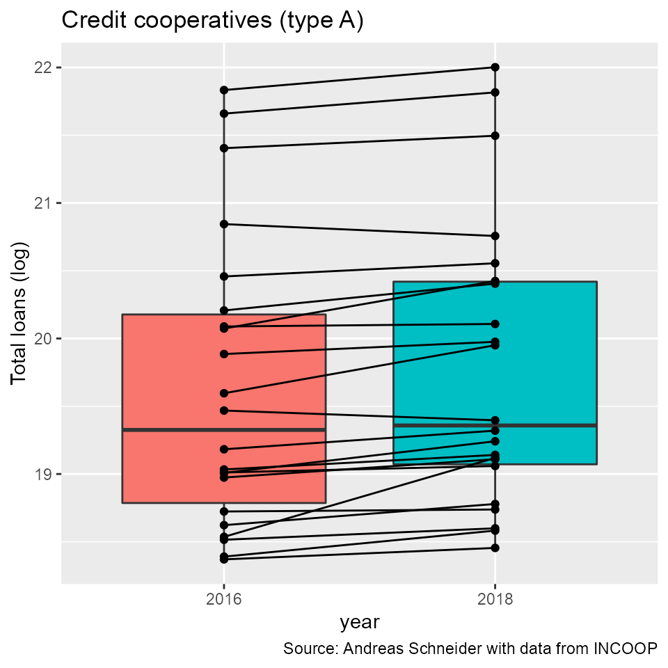

vignettes/concstats-intro.Rmd
concstats-intro.RmdThe goal of the concstats package is to offer a set of alternative and/or additional measures to better determine a given market structure and therefore reduce uncertainty with respect to a given market situation. Various functions or groups of functions are available to achieve the desired goal.
To install the latest development version of concstats directly from GitHub use:
library(devtools) # Tools to Make Developing R Packages Easier
devtools::install_github("schneiderpy/concstats")Then, load the package.
The following examples use mainly fictitious data to present the functions. However, if you want to test the functionality in more detail, the package comes with a small data set of real paraguayan credit cooperatives (creditcoops). There are 22 paired observations for real paraguayan credit cooperatives (with assets > 11 Mio. USD) for 2016 and 2018 with their respective total loans granted. For a better visualization there is an additional column with the transformed total loans. For further information on the data please see the data help file.
#> # A tibble: 6 x 5
#> coop_id year total_loans paired total_loans_log
#> <dbl> <fct> <dbl> <int> <dbl>
#> 1 1 2016 173892358 1 19.0
#> 2 1 2018 199048199 1 19.1
#> 3 2 2016 323892456 2 19.6
#> 4 2 2018 461609439 2 20.0
#> 5 3 2016 179981404 3 19.0
#> 6 3 2018 227232008 3 19.2At the moment, there are the following groups of functions available:
- mstruct is a wrapper for market structure measures
- inequ is a wrapper for inequality and diversity measures
- comp is a wrapper with different concentration measures
- concstats is a function which calculates a set of preselected measures in a one step procedure to get a quick overview of a given market structure
The functions will be presented in more details in the following short step-by-step guide.
We will use a vector which represents market participants with their respective market shares (in decimal form):
The wrapper includes the following individual functions: firm, nrs_eq, top, top3, top5, and all
test_share <- c(0.35, 0.4, 0.05, 0.1, 0.06, 0.04, 0, 0)
test_share_top5 <- top5(test_share) # top 5 market share
#> [1] 96You should have noticed that the market shares are in decimal form. There are eight market participants, however, two have no market shares, by default concstats treats 0 as NA. The result is a top 5 market share of 96 %. You can also access each function through their respective argument in the group wrapper:
test_share <- c(0.35, 0.4, 0.05, 0.1, 0.06, 0.04, 0, 0)
test_share_top <- mstruct(test_share, type = "top") # top market share
#> [1] 40Or, just calculate all measures of the group wrapper.
test_share <- c(0.35, 0.4, 0.05, 0.1, 0.06, 0.04, 0, 0)
test_share_mstruct <- mstruct(test_share, type = "all")
#> Measure value
#> 1 Firms 6.00
#> 2 Nrs_equivalent 3.33
#> 3 Top (%) 40.00
#> 4 Top3(%) 85.00
#> 5 Top5(%) 96.00The result is a table with the market structure measures.
The inequality and diversity group includes the functions entropy, gini, berry, palma, grs, and all.
The group wrapper for competition measures includes the functions hhi, hhi_d, hhi_min, dom, sten, and all
test_share <- c(0.35, 0.4, 0.05, 0.1, 0.06, 0.04, 0, 0)
test_share_hhi <- hhi(test_share)
#> [1] 0.3002
# a standardized value
test_share_hhi2 <- hhi(test_share, unbiased = TRUE)
#> [1] 0.16024
# the min average of the hhi
test_share_hhi3 <- comp(test_share, unbiased = TRUE, type = "hhi_min")
#> [1] 0.1666667The scope of the package is to calculate market structure and concentration measures to get a quick and more informed overview of a given market situation. However, it is good practice to visualize your data in an exploratory step or in reporting your results. The package concstats works fine with other EDA or data visualization packages e.g. overviewR, dataexplorer, kableExtra or ggplot2 to name a view.
Some examples how you can accomplish this. Let us assume one would like to use the group measure for e.g. market structure, and keep the resulting table. We can refine the table using kableExtra which works nice with knitr.
This time, we will use our creditcoops data set, which comes with the package.
data("creditcoops")
head(creditcoops)
#> # A tibble: 6 x 5
#> coop_id year total_loans paired total_loans_log
#> <dbl> <fct> <dbl> <int> <dbl>
#> 1 1 2016 173892358 1 19.0
#> 2 1 2018 199048199 1 19.1
#> 3 2 2016 323892456 2 19.6
#> 4 2 2018 461609439 2 20.0
#> 5 3 2016 179981404 3 19.0
#> 6 3 2018 227232008 3 19.2You will need the following two packages.
Now, we will filter out data for the year 2016.
coops_2016 <- creditcoops %>% dplyr::filter(year == 2016)
head(coops_2016)
#> # A tibble: 6 x 5
#> coop_id year total_loans paired total_loans_log
#> <dbl> <fct> <dbl> <int> <dbl>
#> 1 1 2016 173892358 1 19.0
#> 2 2 2016 323892456 2 19.6
#> 3 3 2016 179981404 3 19.0
#> 4 4 2016 180514838 4 19.0
#> 5 5 2016 96999617 5 18.4
#> 6 6 2016 2550869607 6 21.7
coops_2016 <- coops_2016[["total_loans"]]
# atomic vector of total loans
# We then use the new object `coops_2016` to calculate the market structure measures
# as a group in a one-step-procedure:
coops_2016_mstruct <- mstruct(coops_2016, type = "all")
#> Measure value
#> 1 Firms 22.00
#> 2 Nrs_equivalent 8.22
#> 3 Top (%) 22.07
#> 4 Top3(%) 54.98
#> 5 Top5(%) 68.77
coops_2016_mstruct_tab <- coops_2016_mstruct %>%
kableExtra::kbl(caption = "Market structure 2016", digits = 2,
booktabs = T, align = "r") %>%
kableExtra::kable_classic(full_width = F, html_font = "Arial")
coops_2016_mstruct_tab| Measure | value |
|---|---|
| Firms | 22.00 |
| Nrs_equivalent | 8.22 |
| Top (%) | 22.07 |
| Top3(%) | 54.98 |
| Top5(%) | 68.77 |
The result is a nice reusable table.
Now, let’s go a step further. We will compare the two samples for 2016 and 2018. For this purpose, we will select from our creditcoops data set the relevant columns (coop_id, year, paired, and total_loans_log) and make a new data frame.
Make sure you have installed the ggplot2 package. Load the package.

Having a look a the output, we see a box plot with paired values (cooperatives) for the two sample years 2016 and 2018.